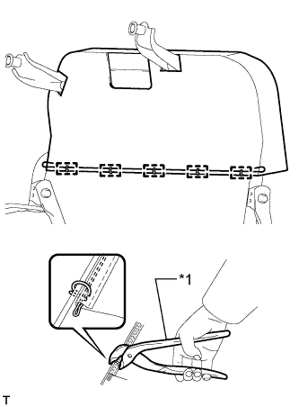
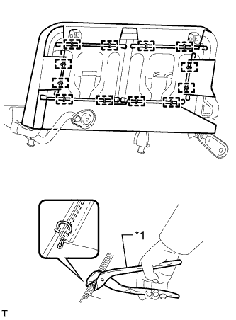

ЗАДНЕЕ СИДЕНЬЕ № 2 В СБОРЕ (для моделей с противоположно расположенными сиденьями) > ПОВТОРНАЯ СБОРКА |
| 1. УСТАНОВИТЕ РАМУ СПИНКИ ЛЕВОГО ЗАДНЕГО БОКОВОГО СИДЕНЬЯ В СБОРЕ |
Установите раму спинки сиденья и 2 втулки.
Заверните 2 болта.
| 2. УСТАНОВИТЕ БОКОВОЙ ОГРАНИЧИТЕЛЬ ЗАДНЕГО СИДЕНЬЯ В СБОРЕ |
Установите ограничитель сиденья и закрепите его винтом.
| 3. УСТАНОВИТЕ ОБИВКУ СПИНКИ ЛЕВОГО ЗАДНЕГО БОКОВОГО СИДЕНЬЯ В СБОРЕ |
Установите обивку спинки сиденья на подушку спинки сиденья.
| 4. УСТАНОВИТЕ ОБИВКУ СПИНКИ СИДЕНЬЯ ВМЕСТЕ С ПОДУШКОЙ |
|  |
Установите обивку спинки сиденья с подушкой на раму спинки сиденья и закрепите ее новыми витковыми пружинами с помощью щипцов для витковых пружин.
| *1 | Щипцы для витковых пружин |
| 5. УСТАНОВИТЕ ОБИВКУ ПОДУШКИ ЛЕВОГО ЗАДНЕГО БОКОВОГО СИДЕНЬЯ В СБОРЕ |
Установите обивку подушки сиденья на подушку сиденья.
| 6. УСТАНОВИТЕ ОБИВКУ ПОДУШКИ СИДЕНЬЯ ВМЕСТЕ С ПОДУШКОЙ |
|  |
Установите обивку подушки сиденья с подушкой на раму подушки сиденья и закрепите ее новыми витковыми пружинами с помощью щипцов для витковых пружин.
| *1 | Щипцы для витковых пружин |
Застегните 2 застежки.
| 7. УСТАНОВИТЕ НОЖКУ ПОДУШКИ ЛЕВОГО ЗАДНЕГО БОКОВОГО СИДЕНЬЯ № 1 В СБОРЕ |
Установите пружину на ножку подушки сиденья.
Установите ножку подушки сиденья и 2 распорные втулки.
Установите 2 штифта и 2 шайбы.
Установите 2 новых E-образных кольца.
| 8. УСТАНОВИТЕ ЩИТОК КРОНШТЕЙНА НОЖКИ ЗАДНЕГО СИДЕНЬЯ № 2 |
Введите в зацепление захват, чтобы установить крышку.
| 9. УСТАНОВИТЕ ЩИТОК КРОНШТЕЙНА НОЖКИ ЗАДНЕГО СИДЕНЬЯ № 1 |
Введите в зацепление направляющую, чтобы установить накладку.
Заверните винт.